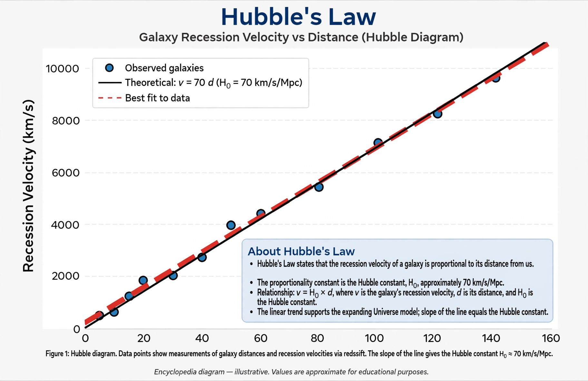

Hubble constant
From Wikipedia, the free encyclopedia

The Hubble constant (H₀) is the proportionality constant in Hubble's law relating galaxies' distances to their recession velocities, and so the current expansion rate of the universe. Its value — fought over for a century — is about 70 kilometres per second per megaparsec, implying an expansion age near 13.8 billion years. A persistent discrepancy between early-universe and late-universe measurements, the Hubble tension, is among cosmology's leading problems.
History of the value
Hubble's 1929 estimate (~500 km/s/Mpc) made the universe seem younger than Earth — a paradox resolved as distances were recalibrated (Baade's 1952 doubling, then the long 'factor-of-two war' between Sandage's ~50 and de Vaucouleurs' ~100). The Hubble Space Telescope Key Project (2001) settled on 72 ± 8, and modern local measurements (SH0ES) converge near 73.
The tension
The cosmic microwave background, interpreted through the standard Lambda-CDM model, predicts 67.4 ± 0.5. The ~5σ disagreement with the local Cosmic distance ladder has survived a decade of scrutiny, independent methods (gravitational-wave sirens, lensing time delays, tip of the red-giant branch) landing on both sides — hence proposals from early dark energy to modified physics, none yet consensus, and a generation of instruments aimed at the problem.